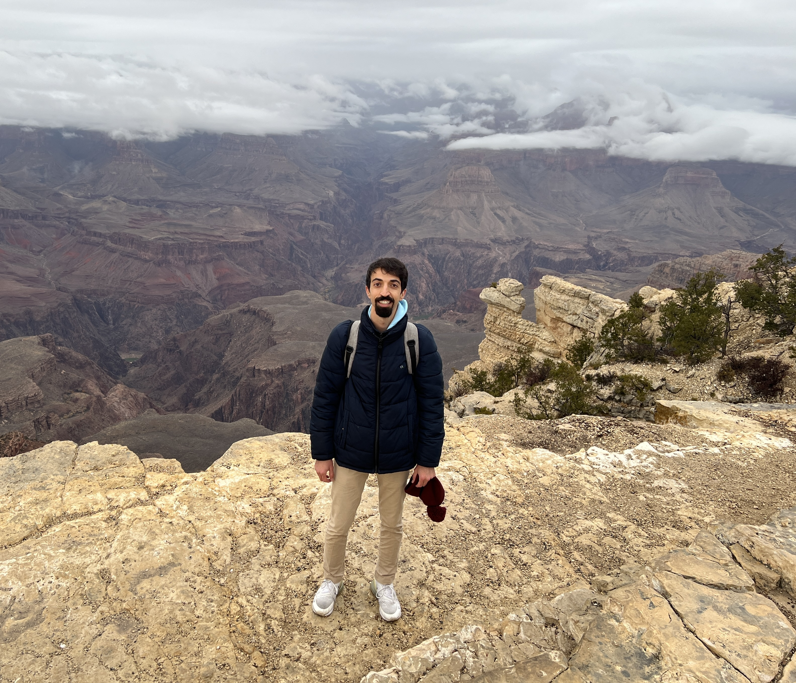

Hamidreza Amini Khorasgani
Email: haminikh at purdue.edu, aminikhhr at gmail.com
[Google Scholar, dblp]
Research Interests
My research lies at the intersection of theoretical computer science and cryptography, with a focus on secure multiparty computation. I am particularly interested in how information-theoretic methods, combinatorial techniques, and geometric tools can be used to characterize the feasibility, efficiency, communication, and round complexity of cryptographic protocols.
Recent work includes a general framework for solving linear inequalities over high-dimensional convex sets, with applications to secure function evaluation (FOCS 2025, FOCS 2022, TCC 2023), drawing on tools from real algebraic geometry; tight characterizations of the feasibility and rate of secure non-interactive simulation of correlations (TCC 2022, EUROCRYPT 2022), using Fourier analysis; and optimal constructions of coin-tossing protocols under various adversarial models (TCC 2019, ISIT 2021), leveraging martingale theory, entropy, and communication complexity.
|
Drafts
Manuscripts Under Review
Research Talks and Presentations
-
Thimza: Stateless Threshold Signatures Over Module Lattices with O(1) Signer State
NIST Threshold Call Preview Talks #3 (TCPT3), October 6, 2026.
[Slides]
-
Decidability and Communication Complexity of Secure Two-party Computation of Randomized Functions
Purdue CS Graduate Research Symposium, March 12, 2025.
[Slides]
Secure Non-interactive Simulation from Arbitrary Joint Distributions
20th International Conference on Theory of Cryptography (TCC), 2022.
-
Geometry of Secure Two-party Computation
63rd IEEE Annual Symposium on Foundations of Computer Science (FOCS), 2022.
-
Efficient Distributed Coin-tossing Protocols
IEEE International Symposium on Information Theory (ISIT), 2021.
-
Optimally-secure Coin-tossing against a Byzantine Adversary
IEEE International Symposium on Information Theory (ISIT), 2021.
Publications
-
Solving Linear Inequalities over Convex Sets & its Applications to Cryptography and Hydrodynamics [PDF]
with Saugata Basu, and Hemanta K. Maji, and Hai H. Nguyen
FOCS 2025
-
Randomized Functions with High Round Complexity [PDF]
with Saugata Basu, and Hemanta K. Maji, and Hai H. Nguyen
TCC 2023
-
Secure Non-interactive Simulation from Arbitrary Joint Distributions [PDF]
with Hemanta K. Maji, and Hai H. Nguyen
TCC 2022
-
Geometry of Secure Two-party Computation [Full Version]
with Saugata Basu, and Hemanta K. Maji, and Hai H. Nguyen
FOCS 2022
-
Secure Non-interactive Simulation: Feasibility & Rate [link] [Full Version]
with Hemanta K. Maji, and Hai H. Nguyen
EUROCRYPT 2022
-
Efficient Distributed Coin-tossing Protocols [link] [Full Version]
with Hemanta K. Maji, Himanshi Mehta, and Mingyuan Wang
ISIT 2021
-
Optimally-secure Coin-tossing against a Byzantine Adversary [link]
[Full Version]
with Hemanta K. Maji, and Mingyuan Wang
ISIT 2021
-
Estimating gaps in martingales and applications to coin-tossing: Constructions and Hardness [link] [Full Version]
with Hemanta K. Maji, and Tamalika Mukherjee
TCC 2019
-
A lattice-based threshold secret sharing scheme [link]
with Saba Asaad, Taraneh Eghlidos, and Mohammad Reza Aref
ISCISC 2014
-
Sharing secret using lattice construction [link]
with Saba Asaad, Taraneh Eghlidos, and Mohammad Reza Aref
IST 2014
-
On the design and secruity of a lattice-based threshold secret sharing scheme [link]
with Saba Asaad, Hossein Pilaram, Taraneh Eghlidos, and Mohammad Reza Aref
ISECURE 2016
-
Performance analysis of large multi-interface wireless mesh networks with multi-different bandwidth channel [link]
with Mohammad Mansoori, and Mehdi Mahdavi
TMC 2015
Teaching
-
Graduate Teaching Award from department of computer science, Purdue university, Spring 2023
-
Teaching Assistant of "Theoretical Computer Science Toolkit", Graduate course, Spring 2023, department of Computer Science, Purdue university [link]
-
Teaching Assistant of "Analytical Toolkit in Computer Science", Graduate course, Spring 2022, department of Computer Science, Purdue university [link]
-
Teaching Assistant of "Introduction to Cryptography", Undergraduate course, Fall 2017, Fall 2018, Fall 2019, Spring 2020, Fall 2020, Spring 2021, department of Computer Science, Purdue university [link]
-
Teaching Assistant of "Algorithms, Design, Analysis and Implementation", Graduate course, Spring 2019, department of Computer Science, Purdue university [link]
-
Teaching Assistant of "Foundations of Computer Science", Graduate course, Summer 2019, department of Computer Science, Purdue university
-
Graduate Instructor of "Foundational Principles of Information Security", Graduate course, Summer 2019, department of Computer Science, Purdue university
-
Teaching Assistant of "Introduction to Probability", Undergraduate course, Fall 2011, department of Mathematics, Isfahan university of technology
Scientific Service
External Reviewer for: FOCS 2021, Eurocrypt 2022 & 2023, Crypto 2022, Asiacrypt 2022 & 2023 & 2026, Communication Letters 2021 & 2022, TCC 2025